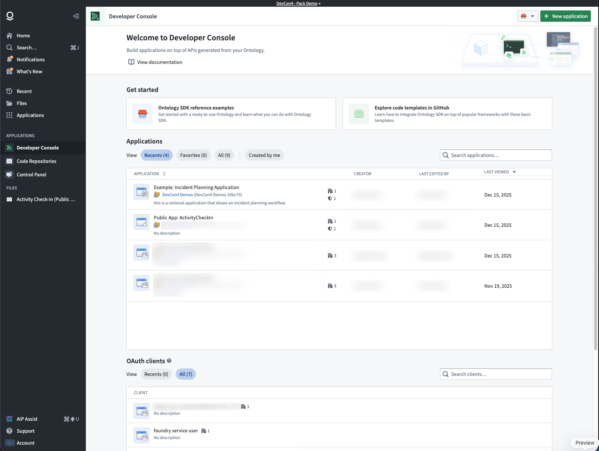
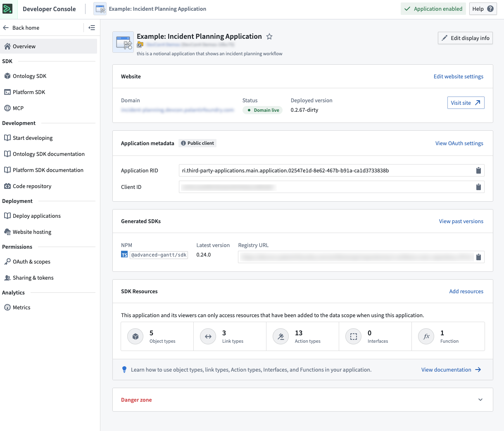
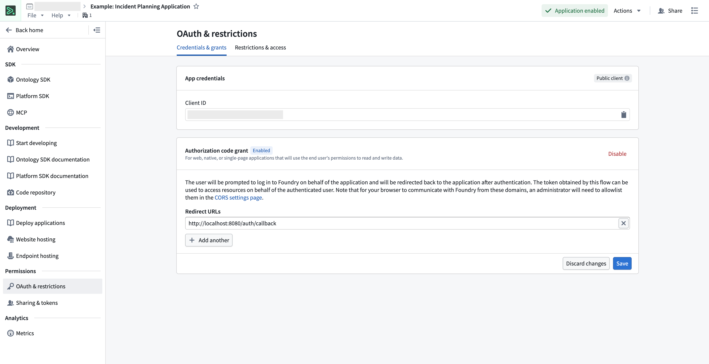
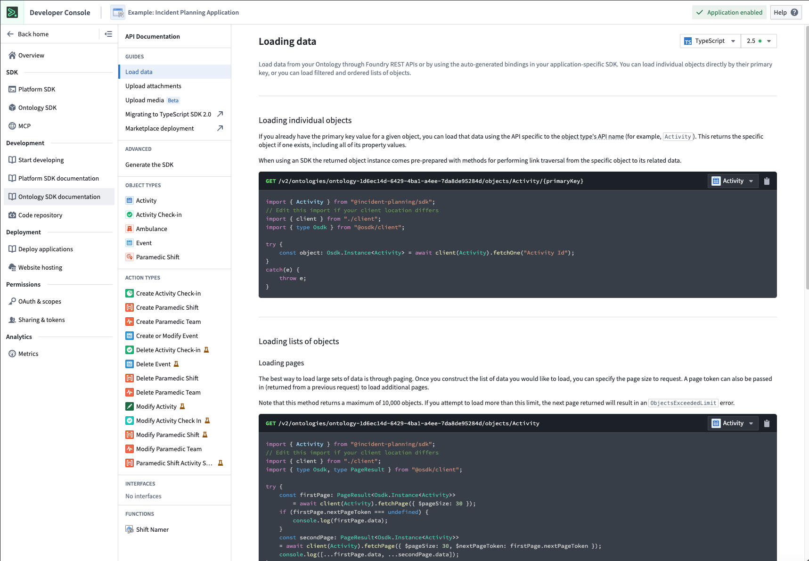
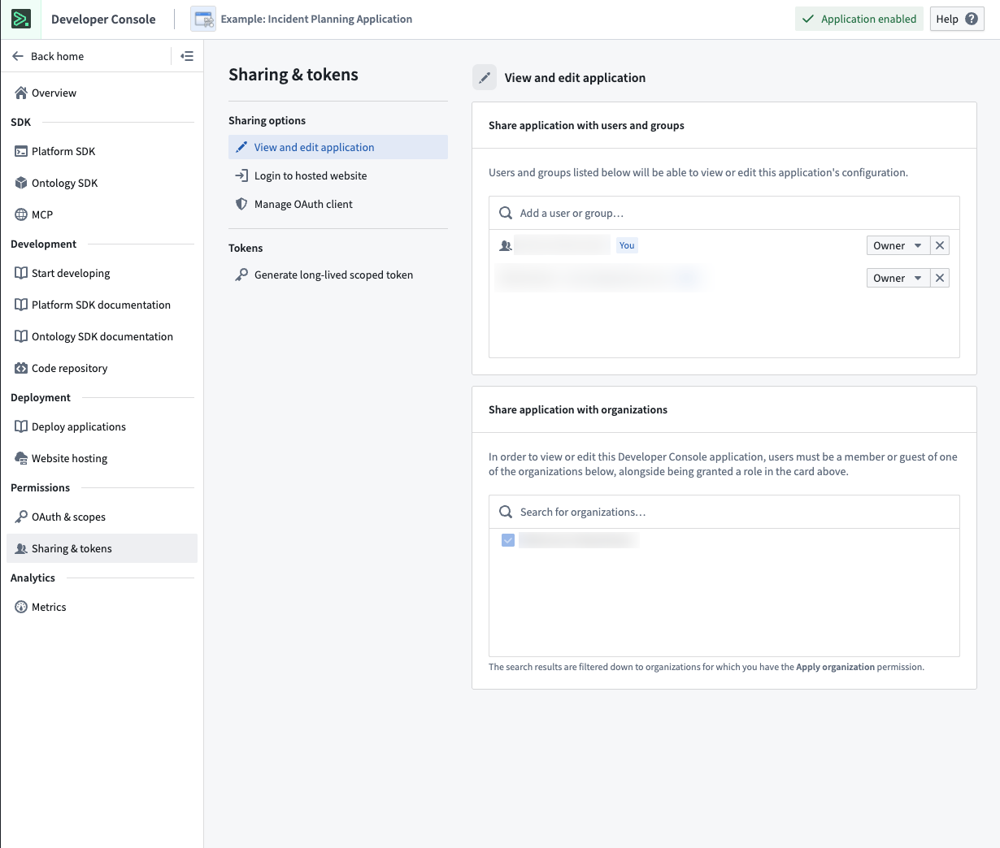
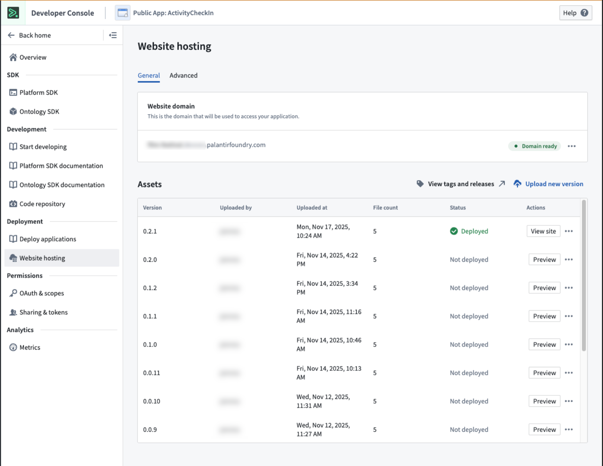
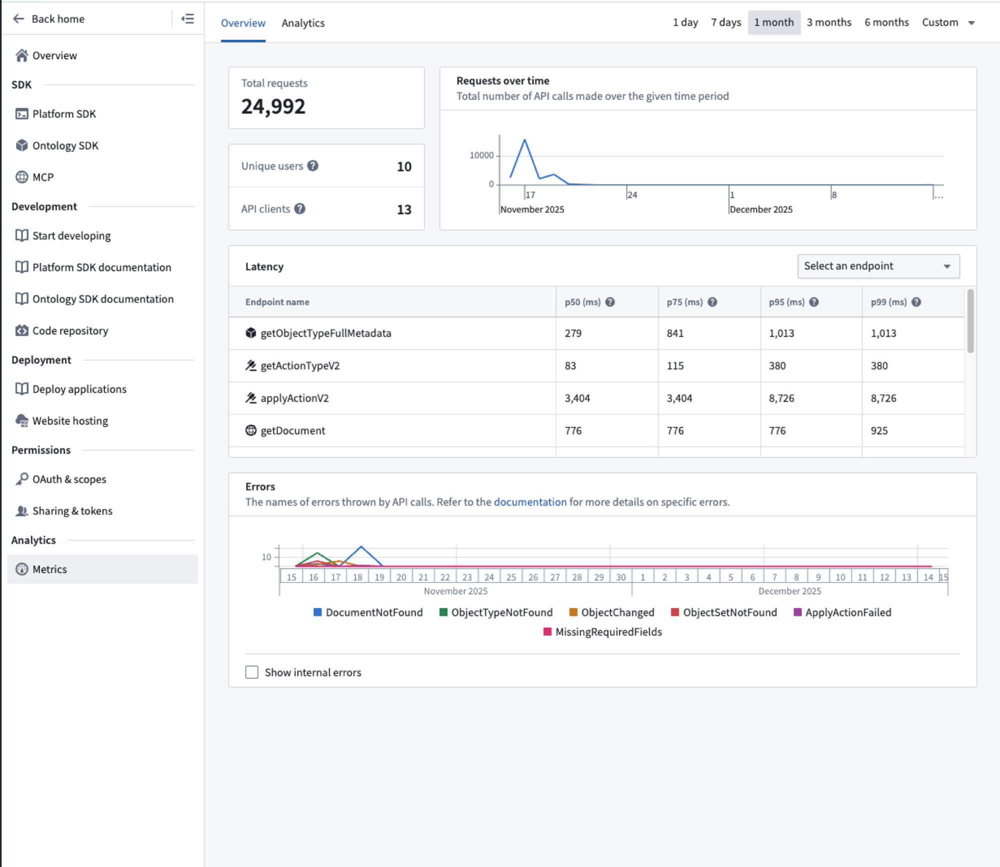

Use Developer Console to build and manage Custom Applications and their associated authorization clients and SDKs. A custom application allows developers to extend Foundry capabilities with custom logic hosted in or outside of Foundry. Legacy OAuth clients are also managed in Developer Console.
:::callout{theme="neutral" title="Developer Console or SuperRepo?"} Developer Console is the UI-first way to configure a custom application: you assemble it here, and Foundry generates and publishes the SDK for the resources you add. If you would rather define the application in code, review SuperRepo. A SuperRepo is a pro-code monorepo that holds your Ontology definitions, functions, and frontend together. It generates the SDK locally as you edit, and ships as a Marketplace product that you can deploy to multiple enrollments from your own CI system. :::
The primary components of a custom application are as follows:
Authorization client: An OAuth client that allows human and service users programmatic access to Foundry.
SDKs: One or more SDKs generated from resources added to an application. See Application restrictions.
SDK documentation: Auto-generated API documentation and code snippets tailored to your application's SDK.
Permissions: User and application-level access controls. See Permissions.
Metrics: Usage and performance insights for your application. See Application metrics.
Web hosting (optional): Host a custom frontend on a Foundry subdomain.
Code repository (optional): A linked code repository resource for application code.
Marketplace distribution (optional): Package and deploy applications across Foundry environments. See Install a Developer Console application with Marketplace.
MCP server (optional): Expose ontology resources as Model Context Protocol tools for external AI agents. See Ontology MCP.
To get started building a custom application, see Create a new Developer Console application.
OAuth clients are a legacy primitive similar to custom applications, but contain only an authorization client and none of the other capabilities listed above. OAuth clients have typically been used to grant unrestricted access to programmatic users. It is recommended that unrestricted applications be used instead of an OAuth client.
The Developer Console landing page lists the custom applications and OAuth clients that you have access to.
For more information on access requirements, review the permissions documentation.

From the application overview page, you can:

For OAuth clients, see Managing an OAuth client in Developer Console.
Configure the authentication flow and resource access restrictions for your application. The restrictions ensure tokens only grant access to resources approved for the application. This page is also where you set the application to Restricted or Unrestricted under Application restrictions; that setting is not part of the creation wizard.
Learn more about configuring permissions and application restrictions.

Each application includes auto-generated API documentation tailored to its SDK content. You can access it by selecting API documentation from the left panel.
The API documentation includes:
Use the language dropdown menu to switch between TypeScript, Python, and other supported languages.

Share your application with users, groups, and organizations. Generate long-lived scoped tokens for programmatic access.

Host frontend-only applications, such as React SPAs, directly on Foundry, eliminating the need for external hosting infrastructure.

For more detail, review the documentation on hosting an OSDK application on Foundry.
Monitor application performance including request volume, success rates, and API latency.

Learn more about application metrics.
Configure your application as an MCP server to expose ontology resources to external AI agents. When enabled, AI agents can discover and use your application's object types, action types, and query functions as MCP tools.
Learn more about Ontology MCP.
By default, each Developer Console application is limited to a total of 1000 data resources and resource access restrictions. Reach out to a Palantir administrator if you encounter this limitation.